Pasporty slovenských měst: bez pasportu (nahoře, modře) a s pasportem (dole, červeně)
Řez zleva (A) doprava (B), ±10 m podél ulice, 10 px = 1 m. Silné čáry = okraje vozovky, tenké = ostatní hranice, žlutá = střed řezu, * = odhad. Ortofoto © GKÚ Bratislava, NLC (ZBGIS, CC BY 4.0).
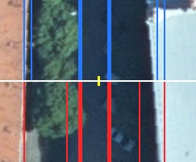
202 · Farská (nitra)bez pasportu: plocha 0.95* · chodnik 6* · pruh 3.6 · chodnik 6* · plocha 0.85*s pasportem: zelen 5.35* · chodnik 1.6* · pruh 3.6 · chodnik 3.7* · plocha 3.15* 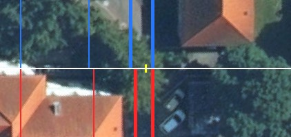
210 · (bez názvu) (nitra)bez pasportu: plocha 9.9* · chodnik 6* · obsluzna 3.2*s pasportem: plocha 10.6* · chodnik 6* · obsluzna 2.5* 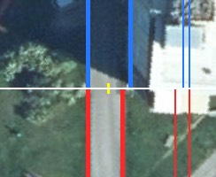
212 · (bez názvu) (nitra)bez pasportu: pruh 4.8 · chodnik 6* · zelen 0.7*s pasportem: pruh 3.9 · chodnik 6* · zelen 1.6* 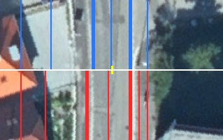
214 · Janka Kráľa (nitra)bez pasportu: zelen 4.25* · chodnik 6* · pruh 2.7 · pruh 2.7 · chodnik 2.5*s pasportem: zelen 3.45* · chodnik 6* · pruh 3.1 · pruh 3.1 · chodnik 1.3* · plocha 1.2* 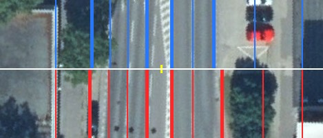
215 · Štúrova (nitra)bez pasportu: chodnik 5.25* · pruh 2.67 · pruh 2.67 · pruh 2.67 · delici 3.6* · pruh 3.07 · pruh 3.03 · chodnik 6* · plocha 6.85*s pasportem: chodnik 4.95* · pruh 2.77 · pruh 2.77 · pruh 2.77 · delici 3.6* · pruh 3.07 · pruh 4.23 · chodnik 6* · plocha 5.65* 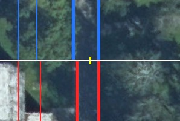
220 · (bez názvu) (nitra)bez pasportu: zelen 3.1* · chodnik 6* · obsluzna 4.2*s pasportem: zelen 3.7* · chodnik 6* · obsluzna 3.6* 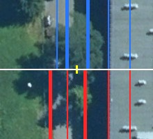
1221 · M. M. Hodžu (zvolen)bez pasportu: nezname 1.4* · pruh 3 · chodnik 3.05* · zelen 3.05*s pasportem: pruh 2.5 · pruh 2.5 · nezname 3.45* · zelen 3.05* 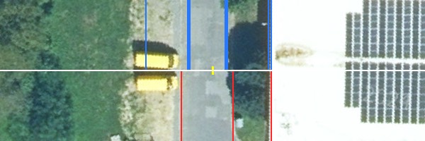
1222 · (bez názvu) (zvolen)bez pasportu: zelen 24.15* · chodnik 6* · obsluzna 5.3* · chodnik 6* · plocha 0.45*s pasportem: plocha 7.25 · nezname 5.45* 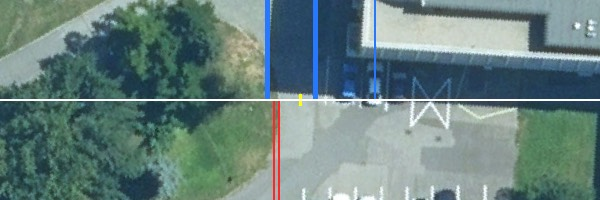
1223 · J. Kráľa (zvolen)bez pasportu: pruh 4.8 · chodnik 6* · zelen 32*s pasportem: nezname 0.5* · plocha 41.55 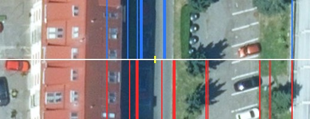
1224 · Námestie slobody (zvolen)bez pasportu: chodnik 3.45* · zelen 1.6* · chodnik 0.65* · pruh 3.9 · zelen 21.35*s pasportem: plocha 3.8 · zelen 1.15* · pruh 4.2 · parkovani 2* · zelen 5.45* · nezname 0.3* · plocha 8.7 · nezname 1.65* · zelen 3.7* 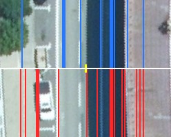
1227 · Sokolská (zvolen)bez pasportu: chodnik 6* · pruh_piktokoridor 2.47 · pruh 2.93 · cyklopruh 1.5 · chodnik 0.5* · zelen 1.9* · chodnik 2.3*s pasportem: plocha 0.65 · chodnik 1.7 · pruh_piktokoridor 3.12 · pruh 4.12 · cyklopruh 1.5 · parkovani 2* · nezname 0.5* · zelen 1.15* · plocha 0.4 · chodnik 1.7 · plocha 0.45 · nezname 0.5* 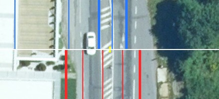
1230 · Strážska cesta (zvolen)bez pasportu: plocha 10.75* · chodnik 6* · pruh 2.77 · pruh 2.73s pasportem: krajnice 3.4* · pruh 4 · pruh 4 · krajnice 3.4* 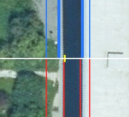
1231 · (bez názvu) (zvolen)bez pasportu: nezname 2.05* · obsluzna 4* · chodnik 1.3*s pasportem: nezname 3* · plocha 2.8 · nezname 1.55* 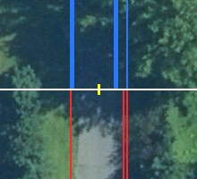
1232 · (bez názvu) (zvolen)bez pasportu: obsluzna 4.9* · nezname 1.35*s pasportem: plocha 5.9 · nezname 0.4* 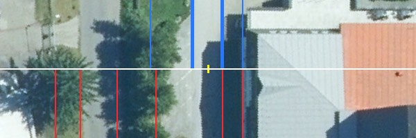
1233 · (bez názvu) (zvolen)bez pasportu: zelen 23.1* · chodnik 6* · obsluzna 4.3* · chodnik 3.05*s pasportem: nezname 3.58* · plocha 5.35 · nezname 5.6* · plocha 9.55 · nezname 2.95* 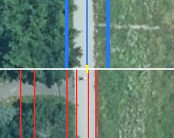
1234 · (bez názvu) (zvolen)bez pasportu: pruh 3* · pruh 3*s pasportem: plocha 2 · zelen 4.75* · plocha 1.4 · chodnik_kola 1.7 · plocha 1.05 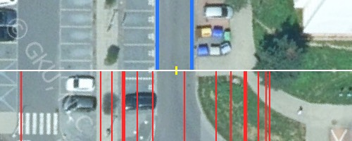
1236 · Alexandra Nográdyho (zvolen)bez pasportu: pruh 4.9s pasportem: plocha 11.25 · stromorad 1.68 · chodnik 1.55 · parkovani 2* · krajnice 2.17* · pruh 4.5 · pruh 4.5 · krajnice 2.17* · parkovani 2* · chodnik 1.85 · plocha 1.15 · nezname 0.45* 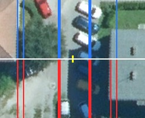
238 · (bez názvu) (zvolen)bez pasportu: zelen 1* · chodnik 6* · obsluzna 5.2* · chodnik 4.6*s pasportem: zelen 1* · chodnik 6* · obsluzna 5.2* · chodnik 3.55* · zelen 1.05* 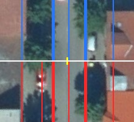
243 · Bernolákova (piestany)bez pasportu: chodnik 5.05* · pruh 2.65 · pruh 2.65 · chodnik 4.6*s pasportem: zelen 3.3* · chodnik 1.75* · pruh 2.65 · pruh 2.65 · chodnik 4.6* 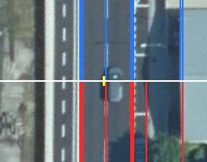
249 · Dopravná (piestany)bez pasportu: pruh 3.17 · pruh 3.13 · chodnik 6* · plocha 0.3*s pasportem: pruh 3.17 · pruh 3.13 · chodnik 1.8* · plocha 4.5* 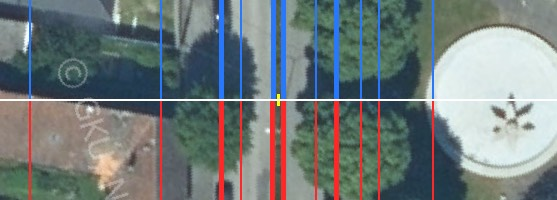
251 · Staničná (piestany)bez pasportu: zelen 13.1* · chodnik 6* · parkovani 2 · pruh 3.2 · zelen 0.95* · pruh 3.35 · parkovani 2 · chodnik 2.5* · nezname 1.75* · stromorad 5.4*s pasportem: zelen 13.1* · chodnik 6* · parkovani 2 · pruh 3.1 · zelen 1.05* · pruh 3.35 · parkovani 2 · chodnik 2.5* · nezname 1.75* · stromorad 5.4* 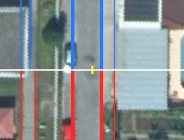
257 · Zavretý kút (piestany)bez pasportu: plocha 1.3* · chodnik 6* · pruh 4.1 · plocha 1.9*s pasportem: plocha 2.05* · chodnik 5.25* · pruh 4.1 · plocha 1.9* 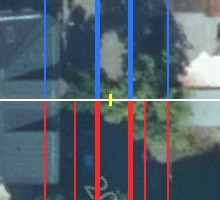
260 · Štúrova (piestany)bez pasportu: chodnik 5.15* · pruh 3.3 · chodnik 3.8*s pasportem: zelen 2.95* · chodnik 2.2* · pruh 3.3 · chodnik 1.5* · zelen 2.3* 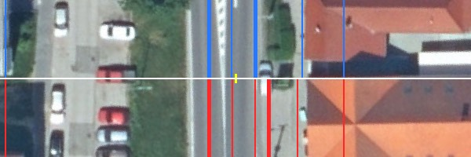
262 · Nitrianska (hlohovec)bez pasportu: zelen 25.9* · pruh 2.95 · pruh 2.95 · chodnik 6* · plocha 5.35*s pasportem: zelen 25.9* · pruh 2.98 · pruh 2.99 · krajnice 1.63 · chodnik 3.7* · plocha 5.95* 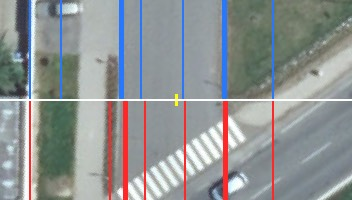
263 · Bernolákova (hlohovec)bez pasportu: zelen 3.1* · chodnik 6* · parkovani 2* · pruh 4.15 · pruh 4.15 · zelen 4.9*s pasportem: zelen 8.05* · chodnik 1.45* · parkovani 2* · pruh 4 · pruh 4 · zelen 4.8* 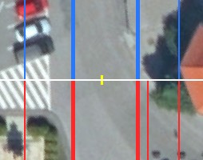
267 · Námestie sv. Michala (hlohovec)bez pasportu: chodnik 6* · pruh 8.1 · chodnik 5.2*s pasportem: chodnik 6* · pruh 8.1 · chodnik 1.3* · plocha 3.9* 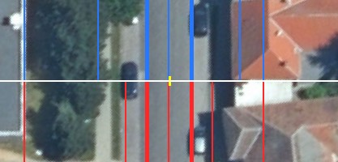
269 · Pribinova (hlohovec)bez pasportu: plocha 9.05* · chodnik 6* · pruh 2.75 · pruh 2.75 · chodnik 6* · plocha 2.95*s pasportem: zelen 12.5* · chodnik 2.55* · pruh 2.75 · pruh 2.75 · chodnik 2.65* · plocha 6.3* 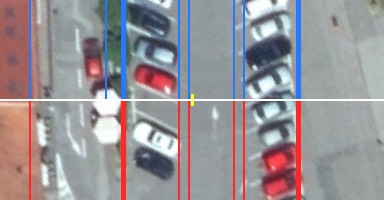
270 · Námestie sv. Michala (hlohovec)bez pasportu: plocha 7.6* · chodnik 1.7* · parkovani 5.55 · krajnice 1.02* · pruh 4.5 · krajnice 1.02* · parkovani 5.35s pasportem: zelen 9.3* · parkovani 5.55 · krajnice 1.02* · pruh 4.5 · krajnice 1.02* · parkovani 5.35 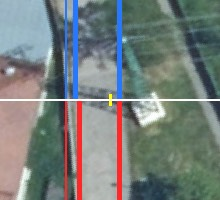
272 · Športová (hlohovec)bez pasportu: chodnik 0.86* · pruh 4.4s pasportem: chodnik 1.26* · pruh 4 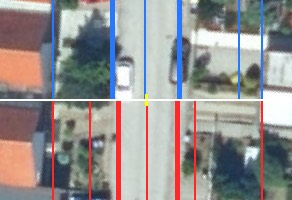
277 · Koperníkova (hlohovec)bez pasportu: chodnik 5.85* · pruh 3.35 · pruh 3.35 · chodnik 6* · zelen 2.3*s pasportem: zelen 3.7* · chodnik 2.75* · pruh 2.95 · pruh 2.95 · chodnik 1.85* · zelen 6.65* 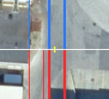
279 · (bez názvu) (hlohovec)bez pasportu: chodnik 3.95* · obsluzna 3.1*s pasportem: plocha 2.85* · chodnik 1.1* · obsluzna 3.1* 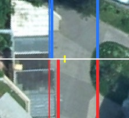
6 · (bez názvu) (bratislava)bez pasportu: chodnik 0.35* · obsluzna 7.8*s pasportem: chodnik 1.45* · obsluzna 6.7* 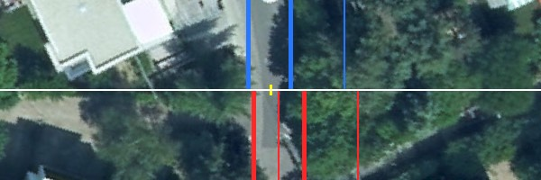
16 · Fándlyho (bratislava)bez pasportu: pruh 4.7 · chodnik 6* · zelen 30.9*s pasportem: pruh 2.8 · pruh 2.8 · chodnik 6* · zelen 29.4* 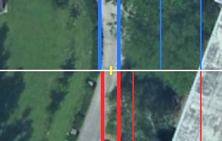
19 · (bez názvu) (bratislava)bez pasportu: obsluzna 2.7* · chodnik 6* · zelen 5.65*s pasportem: obsluzna 2.3* · chodnik 2.1* · zelen 9.55* 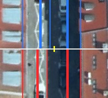
22 · Tallerova (bratislava)bez pasportu: chodnik 3.55* · parkovani 2 · pruh 3.5 · chodnik 2.75*s pasportem: chodnik 2.95* · parkovani 2 · pruh 4.1 · chodnik 2.75* 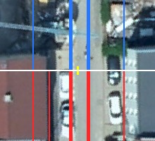
23 · Palárikova (bratislava)bez pasportu: chodnik 5.3* · pruh 2.5 · chodnik 5.15*s pasportem: plocha 2.35* · chodnik 2.95* · pruh 2.5 · chodnik 5.15* 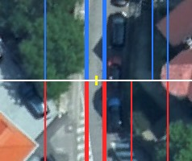
25 · Vlčkova (bratislava)bez pasportu: chodnik 5.05* · pruh 2.2 · chodnik 6* · plocha 1.9*s pasportem: chodnik 5.05* · pruh 2.2 · chodnik 3.45* · plocha 4.45*